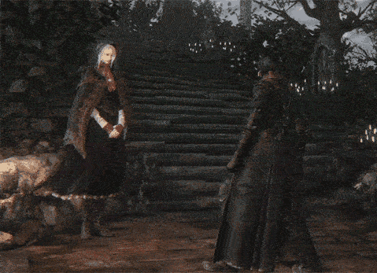
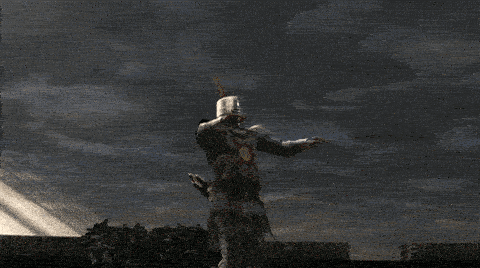
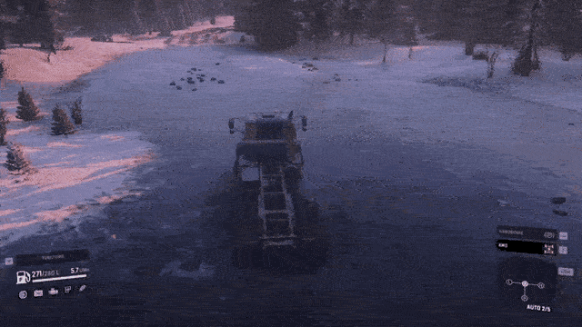

Fl1x1n
Hello m8! My name is Flixin or Fl1x1n (numbers make it sound more cool). Currently I'm 17 years old and studying computer science. I don't really know what I should be writing here, but I'll try to make it sound interesting.
“I've not stopped crying since you went away...”
Things I enjoy
I end up enjoying a lot of things. My main idea was to become a car mechanic but due to some problems with the school that teaches it I decided to go for computer science instead. That ended up resulting in a amalgamation named Fl1x1n. I also love music a lot and ended up buying a guitar. My journey on it has been quite bumpy to say the least. I decided to buy a guitar with a floyd rose and after 6 months my strings got quite rusty. "Let's try to do it myself!" and that made me spend 60 currencies on a maintenance. Fortunately i didn't damage anything but I got quite sad and stopped for a while. Recently I've been practicing "daily" but I seem to be stagnant. Maybe I'll find a way to solve my issues. I also collect Vinyl Records. You can find my collection here.
I also know some things about woodwork and farming since I end up helping my grandmother by plowing using a small tractor and my father when he has work on weekends. I'll try to make a personal website in the future to make things more organized.
Games I Play (click on the cards)
“Farewell good hunter, may you find your worth in the waking world.” I love dolls... and suffering.
Sadly I'm constantly tired to play souls games (maybe on this Christmas vacation).
Started playing it last weekend and I already fell in love with this game to be honest.

Kissing trees at 200Km/h.
Only game that I can play without frying my brain. This game is therapeutic af fr fr.
Personal Car
Currently I don't have a car yet, but I'm planning on buying a fiat 127 and restoring it. It
was my father's first car and it has special meaning to me since I wanted to bring some of the
old days to my father (and also because I love old carburated cars). The car is completely
fucked in a bit of a rough shape (matching my wallet) but I really don't want to give up
on him. Even if I buy another car once I have money I'll buy the fiat 127 because Italy and
Carburetor.
Other info
I thought it would be a nice idea to share some of my equipment here. Here's my gear:
Guitar
- Jackson JS32 Dinky dka-m arch top (black);
- Amplug fly 2 (running on hopes and dreams);
- Jazz 3 picks;
- Gator GL Electric;
- LEEM amp, yamaha lunchbox amp (parts) and an EKS Starfire (completely fucked). Bought for 50 currencies.
Sound
- Technics SA EH500;
- Philips can't remember;
- Audio Technica AT-LPX60usb.
PC
Currently I don't have a PC yet. I rely on the school computerto bring my projects to life. Since I'll be leaving school by july, my projects will most definitely be paused. For now I have this:
- Ducky One 3 SF (silver);
- Logitech G502 Hero;
- Razer Barracuda X (2022 verison);
- Razer Blackshark V2 X;
- Random ass chair, a desk and a The Great Wave off Kanagawa mousepad.
Summary
So to summarize everything, I try to do a lot and don't really know shit. Any further questions can be asked via... I don't know. I promise I'm working on that. Stay safe and hope you like what I've done so far 💜.